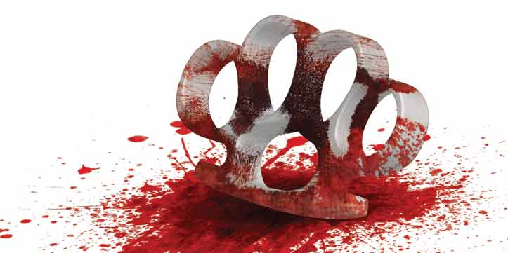

Design-relatert arbeid fra 2012 til 2015
2015
20.03.15
Logo for ueksisterende helsestudio
Logo
Logo for eget oppfunnet helsestudio, laget med Illustrator.
Skjorte med logo
En mesh laget i Illustrator.

Drikkeflaske med logo
Et 3D-revolve element laget i Illustrator.
portefølje
1. 06.02.15 Ved levering

2. 10.03.15 Etterarbeid
Nettportefølje laget i dreamweaver.
Ble ikke helt førnøyd med porteføljen jeg hadde til deadline, så jeg endret den litt i ettertid. Endringene som er gjort i bilde nr.2, er først og fremst at header og footer er strekker seg ut av container-området og fargebytting
15.12.14
Forskningsarbeidet
Beskrivelse av den vitenskapelige prosdyren.
09.01.15
Tungmetaller
Beskrivelse av den vitenskapelige prosdyren.
13.01.15
Miljøovervåkning
Beskrivelse av prosedyren og resultatene.
2014
14.12.14
Brosjyre – Historier om farger, Nicomedia
Side 2, 6 og 1
Side 3, 4 og 5
På utplassering på NTNU-trykk (NTNU grafisk senter) fikk jeg en oppgave i å designe en brosjyre med bruk av tekst fra Nicomedia og utvalgte bilder
03.04.14
Magasinoppslag, gotikken
To sider om den gotiske stilarten og det vi har fra den. Om den ikke har alt, så har den noe.
15.09.14
Brettspill, savnet i sahara
Basert på bok under samme navn. Et til brettspill med spørsmål om MK.

02.05.14
Logoer, holdningskampanje for ulv
logoer til undersider på holdningskampanje for ulv nettside prosjekt
Undersidene er: Ulvebestanden, leveområdet og jakt på ulv.
3 vektorportrett av Serj tankian
27.03.14
31.03.14
31.03.14
19.05.14
Sjokkselger plakat, Thomas Engers bøker
16.05.14
Utkast til sjokkselgerdesign
Bokcover og poster, Mord på orientekspressen
27.03.14
Bokcover
21.03.14
Poster
28.02.14
Tidligere utkast til bokcover
21.08.14
Brettspill
brettspill der turen fra start til mål innebærer å svare på spørsmål relatert til medier og kommunikasjon.
2013
05.12.13
Logo – City frisør
logoen på plakat
kilde
http://kxweb.no/

07.02.13
Logo, Jr NM ski 2015
designet logo til Jr NM ski hommelvik 2015
ved utplassering på OREGA i 2013 har fikk jeg
designet logo for junior NM på ski 2015. Den endelige versjonen ble fikset på etter at jeg leverte
mitt ferdige utkast. "Junior" og "ski 2015" ble skrevet i mer passende font og farge. Logoen ble
opprinnelig laget i Photoshop, men den du ser her er en remake i Illustrator.
25.10.13
Bokcover, Åtte glass
2012
25.10.12
Pigvin
04.12.12
Klessvask
22.10.12
And i vann, motiv til en skjorte
Tegnet i photoshop.